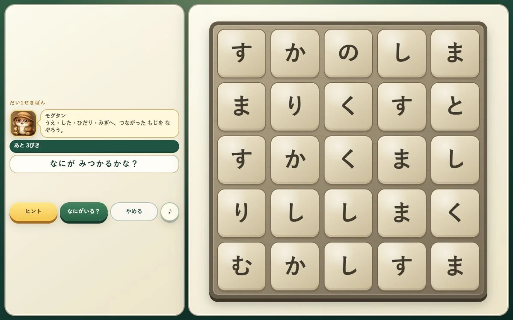

このゲームについて
五×五の石板に並んだ文字を見て、上下左右につながる文字をなぞり、動物の名前を探します。見つけた動物は八つのエリアにある動物リストへ記録されます。
遊び方
石板から動物の名前になる文字の道を見つけ、最初の文字から最後の文字まで指やマウスでなぞります。練習では道の見方とヒントの使い方を順に試せます。
ゲーム中に行うこと
- 五×五の文字盤から動物の名前を見つける
- 上下左右につながる文字を順番になぞる
ここではゲーム中の活動を説明しています。能力の向上や、特定の効果・改善を保証するものではありません。